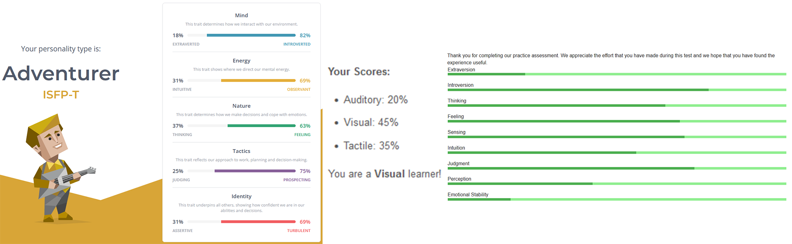

Personal Profile

These results show me that I am a very introverted individual that likes to think long and hard about decisions before making them. It also shows me that I am a very visual learner as well as a very tactile learner in that I like to see things physically in front of me when learning about something.
I think these results may influence my behavior in a team because I am very introverted so I am less likely to speak up about my ideas or problems.
I should take this into account when forming a team by trying to find people who are possibly extroverted and who would be comfortable leading the situation.